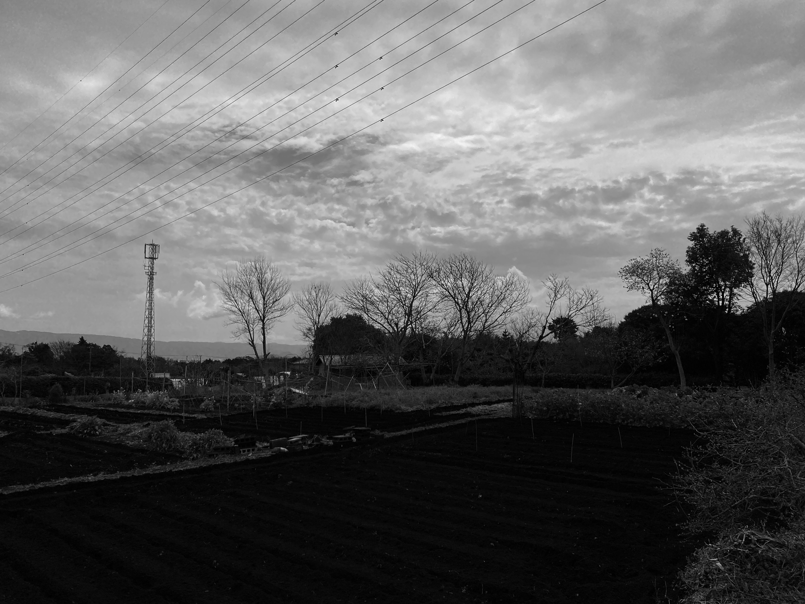
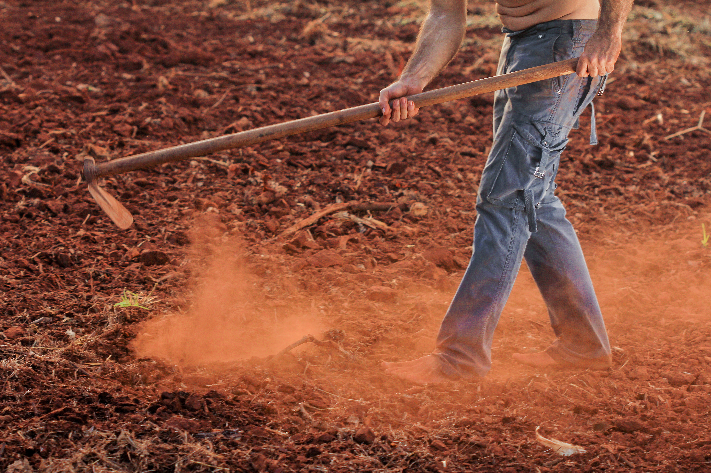
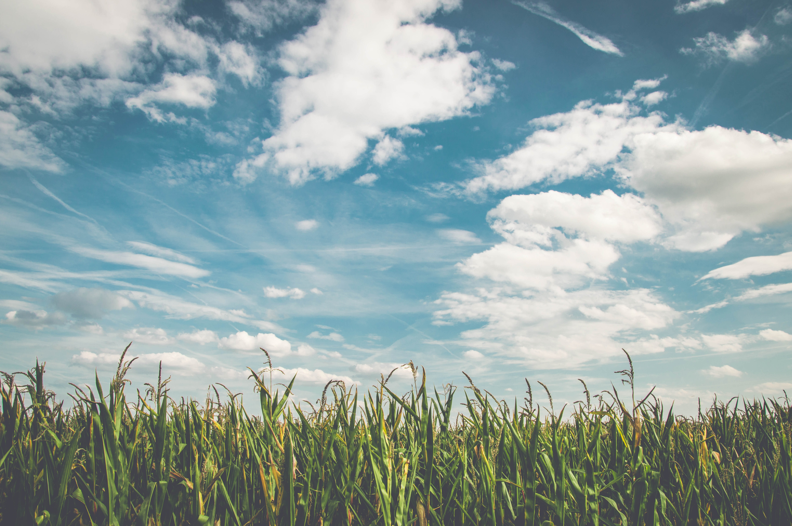

In 1985,my father started farming in this region.
He has been planting several types of trees every year..
Old memories..

As a farmer..
He also grows vegitables and fruit seeds every season.
Thanks to the nature,we can harvest fresh vegitables and fruits.
We can eat them in the farm.. They are so good !

The family and children..
Children have energy to create happy atmosphere.
Now and then..
When I was a kid, I used to play with my friends in the feild and it was so fun.
Our Goal..
I hope many family will come to see our field and create joyful atmosphere.

At last, we can design only one field..
The more people are coming to see our field and
The more vegitables are growing, the happier everyone will be.
